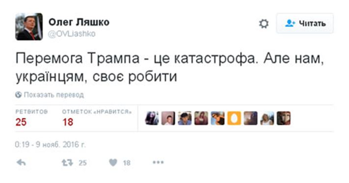

Malgré une pression médiatique sans précédent et le soutien plus qu'inconditionnel des "leaders" de la communauté internationale à Hillary Clinton, Donald Trump a gagné les élections américaines et devient ainsi le nouveau Président des Etats Unis, avec lequel il faudra bien travailler.
Les réactions dans le monde suivent la ligne de fracture que la présidence Obama a renforcé tout au long des guerres et des révolutions démocratiques, en couleurs et finalement cahotiques. Qu'attendre de cette présidence?
Quelques remarques en attendant de pouvoir juger sur les actes.
Ceux qui aiment la rupture devraient être satisfaits. F. Hollande, qui pourtant avait fait sa campagne sur le mode de la rupture avec Sarkozy ne digère pas la perte du grand frère, presque du père américain. Le Figaro titre :
Élection américaine : le gouvernement sonné par la victoire de Trump.
Il faut dire que tout le système travaillait pour H. Clinton. Son staff qui discutait des questions à poser à Trump avec les médias, les sondagesqui la donnaient quasiment tous gagnante, rien que 322 au cours du dernier mois. Forcément, la France, totalement alignée sur la politique atlantiste agressive de Washington, politique menée par Obama et devant être renforcée par Clinton, la France a la gueule de bois.
Le Washington Post soupçonnait F. Hollande d'appeler les électeurs américains à voter contre Trump:
The statement was immediately seen as implicit endorsement of Hillary Clinton
Jean-Marc Ayrault, grand stratège de la diplomatie française « essaie de comprendre ». Ce n'est pas facile pour lui. Car la question reste sensible: qui va maintenant donner les ordres? La politique de conciliation annoncée par Trump ne peut pas plaire à cette caste politique proche des néoconservateurs américains, sorte de réincarnation chauchemar des que du néotrotskisme.
Et dans un sursaut ressemblant plus à un moment de crise existentielle qu'à une prise de conscience, il déclare :
Assurant que « la France continuera de travailler avec les États-Unis », le locataire du Quai d'Orsay a toutefois tenu à prévenir que l'Hexagone était « allié mais pas aligné » sur son ami, avec qui il « discutera d'égal à égal ».
La France choisit manifestement sur quelle ligne s'aligner. Mais sans leader, cette ligne aura du mal à survivre, ce qui est une bonne nouvelle.
Car dans son discours d'élection, D. Trump a parlé de la reconstruction nationale, de sa volonté d'être le Président de tous les américains appelant à l'union nationale, de la nécessité de relancer l'économie, ce qui passe par une politique de grands travaux, créant également des emplois. Une seule phrase sur la politique internationale, très vite, comme un élément secondaire de son programme: il est prêt à travailler avec tout le monde. Et c'est pour lui de cette manière que les Etats Unis retrouveront leur place de leader.
Forcément, il y a quelques inquiétudes. L'OTAN rappelle immédiatement à quel point le rôle de leader des Etats Unis est fondamental - pour la survie de l'institution, certes.
Et la panique touche également l'Ukraine. Liachko, déclare que c'est une catastrophe pour l'Ukraine, et qu'il va bien falloir que les ukrainiens finissent de s'occuper de leurs affaires, ce qui serait effectivement catastrophique pour le pouvoir en place.
L'ancien ambassadeur américain en poste à Moscou après un élan du cœur a retrouvé ses esprits, féliciter Poutine n'était pas des plus à propos, il a effacé ce tweet.
En revanche, en Russie, il y a de l'espoir que la situation finisse enfin par se calmer.
Il y a peu de chances pour que Trump considère la Russie comme la principale menace pour les Etats Unis, donc la crise de russophobie dans le monde atlantiste et l'agressivité politique vont diminuer.
Ce qui ne veut pas dire que les Etats Unis et la Russie deviennent du jour au lendemain les meilleurs amis du monde. Ce sont des pays concurrents, qui chacun a sa place sur l'échiquier international et chacun va défendre ses intérêts. Ce qui sera beaucoup plus difficile pour l'Europe.
La politique américaine risque de se reconcentrer sur ses propres problèmes, ce qui va certainement avoir des conséquences en matière de soutien financier apporté aux structures politiques contestataires à l'étranger. Toutefois, rien de radical n'est à attendre rapidement, car même si les Républicains récupèrent également les Chambres, les lobbys sont très puissants et les décisions se prennent souvent dans les couloirs.
En tout cas, une conclusion, très banale, peut être tirée pour la France: en se déplaçant massivement dans les bureaux de votes, les électeurs américains ont fait mentir tous les sondages. Rien n'est joué d'avance, rien n'est perdu. Il faut se battre jusqu'au bout. Voyons si nous serons capables de reprendre le contrôle de notre pays.


Partager cette page